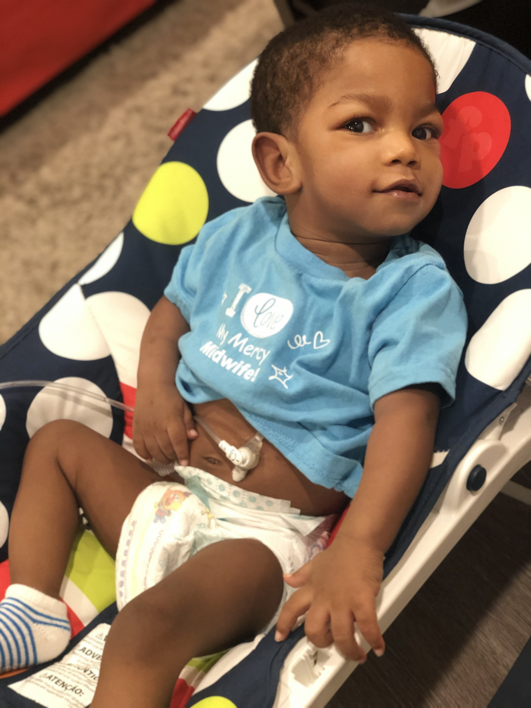
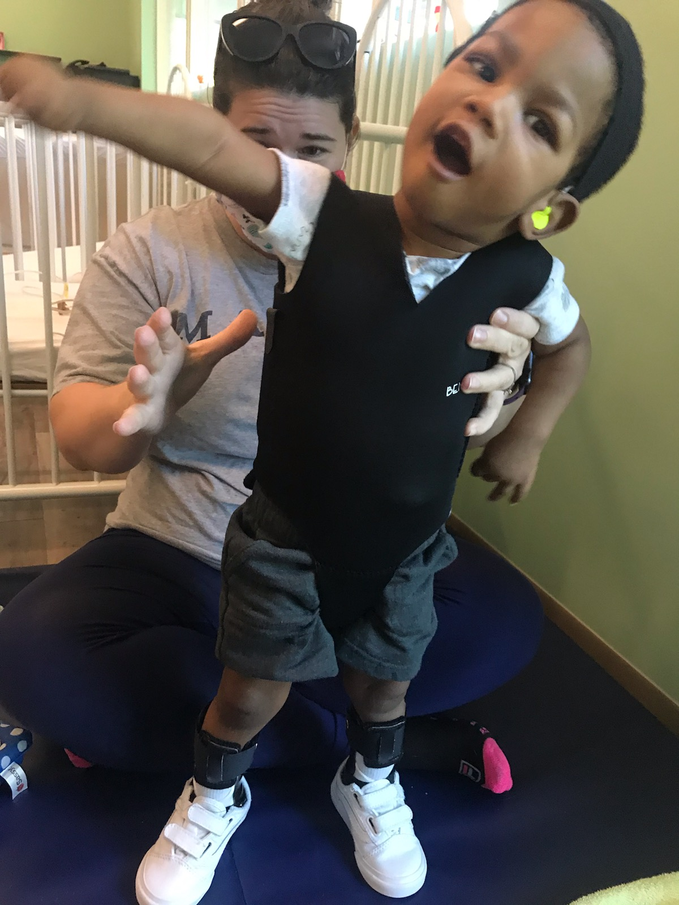
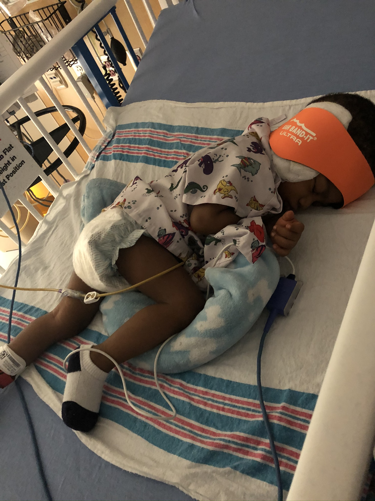
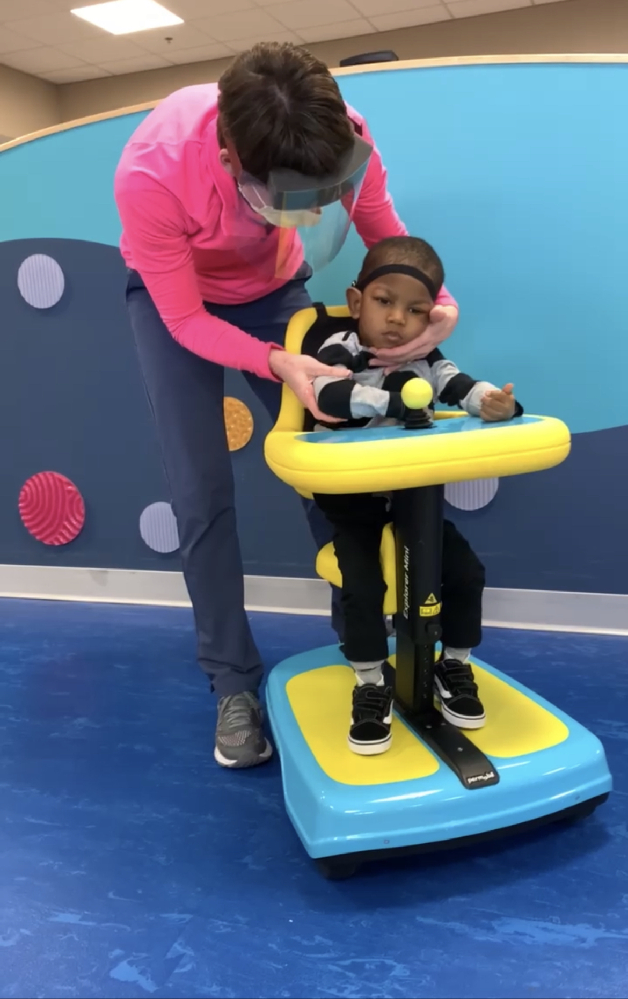

Information and Resources:
- Parents of Infants and Children with Kernicterus
- Duke Research: Umbilical cord blood improves motor skills in some children with cerebral palsy
- Cord Blood Video Library

Before I gave birth to my first child, my son Rocky, I had never heard of the term 'Kernicterus' a day in my life. I surely had no idea that this word would drastically change everything about my life. Kernicterus is a very rare type of brain damage that occurs in a newborn with severe jaundice. It happens when a substance in the blood, known as bilirubin, builds up to very high levels and spreads into brain tissues. This in turn causes permanent brain damage. That is exactly what happened on day 5 of Rocky's life.
As one could imagine, this was beyond devastating to discover our first child, who just days earlier was born perfectly healthy, would now suffer permanent brain damage. Brain damage that in turn led to temporary vision loss, severe hearing loss, feeding tubes, cerebral palsy, global developmental delays and a host of other complications. This is not to depress anyone or gain sympathy. This is to bring awareness. Kernicterus is something that is 99% avoidable with the right knowledge. It is something that can be tested for and monitored immediately after birth. Unfortunately, Rocky's physicians did neither until it was too late.
At 3 years old Rocky has made significant progress, but still has a long fight ahead of him. This is something he will struggle with throughout his entire life, but each day we like to celebrate his successes and strengths. We try not to dwell on the past or any weaknesses. Rocky has regained his vision 100%. He currently has 1 cochlear implant that allows him to hear and in July of this year he will receive his second. He receives physical, occupational, speech, and hearing theraphy multiple times each week in order to improve his movements and developmental delays. He takes numerous medications which also allow for him to function better throughout his day. He takes all feedings through a feeding tube, and although not ideal, since receiving it he has gained a significant amount of weight and his immune system has greatly improved. We are greatful for continued progress.
Technological and medical advancements have been such a blessing to us. Rocky has so many devices and so much equiptment that allow him to access a quality of life that he otherwise wouldn't be able to. We are constantly researching advancements and having conversations to find out other ways to help him. With the birth of our 2nd child we were recently able to store her cord blood, thanks again to medical advancements, that may one day in the future be used by Rocky to improve his cebral palsy condition. Websites, parent groups and videos, like some of the ones listed below, keep us up to date on clincal trials and advancements.
Although this is not the life anyone in our family would've chosen, we are grateful for it. Rocky is such a positive light. He wakes up with a smile each day and has the most infectious laugh. He has taught us so much over the past three years. He is strong, resilient, and destined for greatness. When we decided on his name we had no idea just how perfect it was for him. He is a true fighter. A champion in his own right.
   